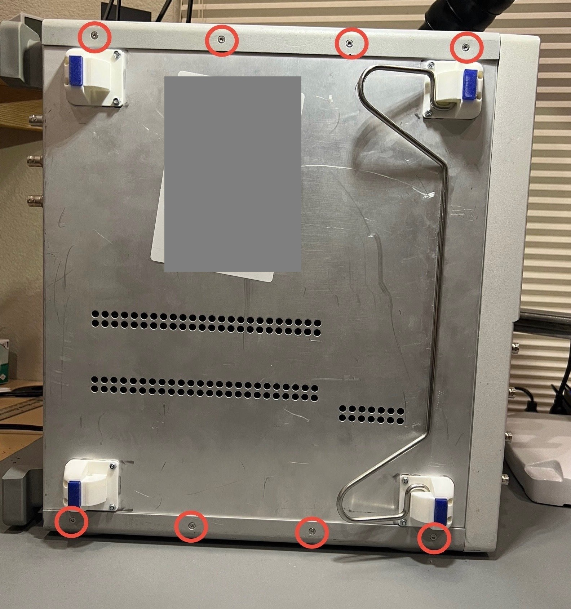
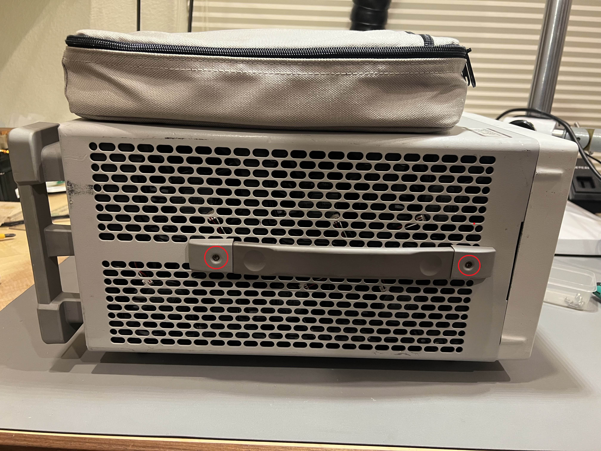
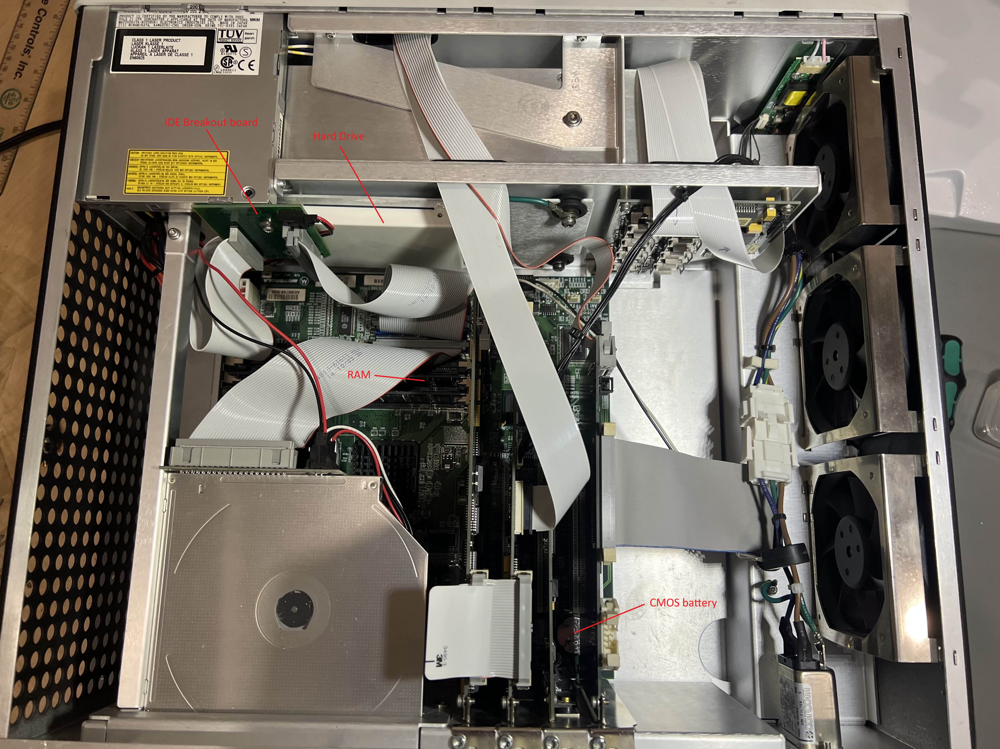
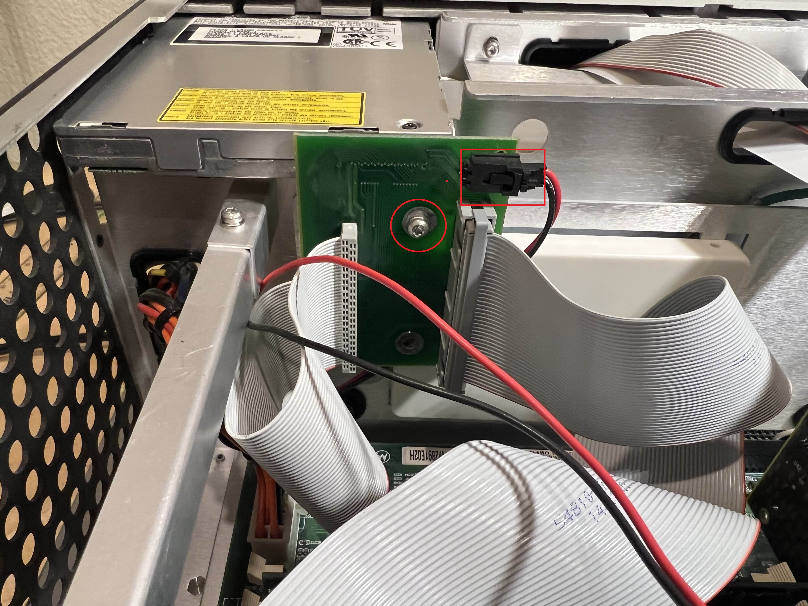
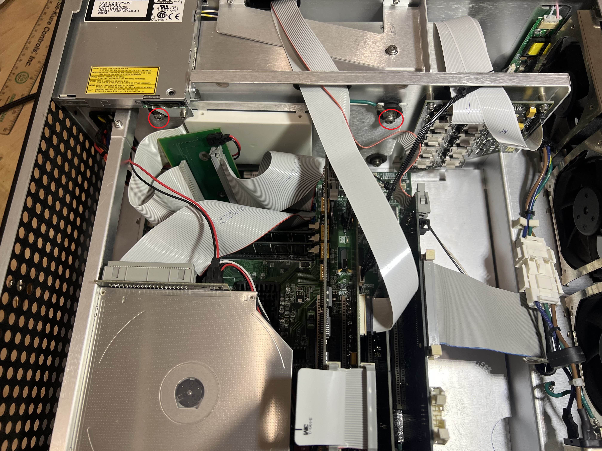
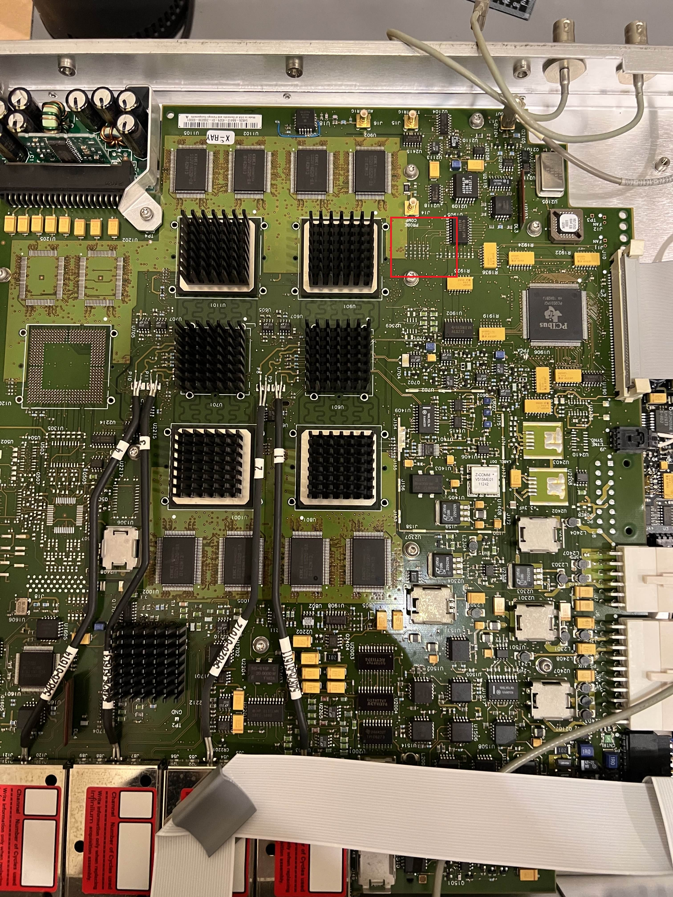
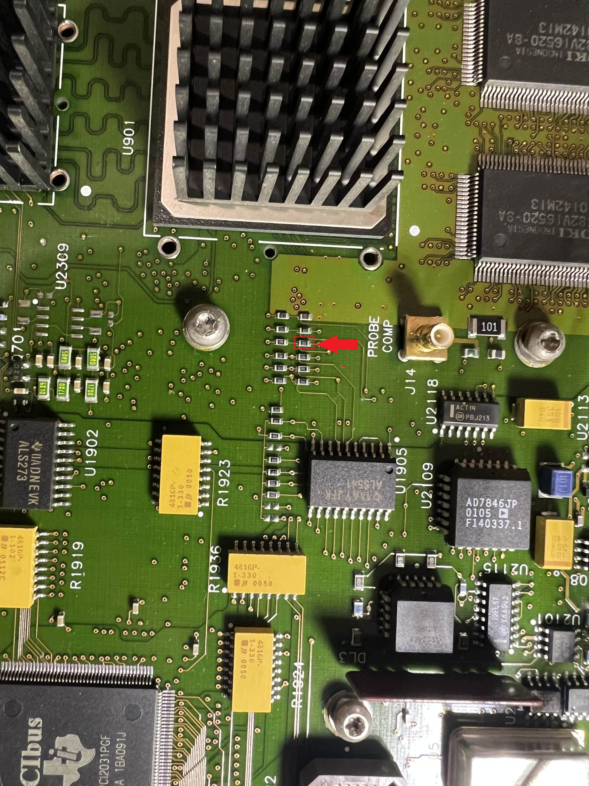
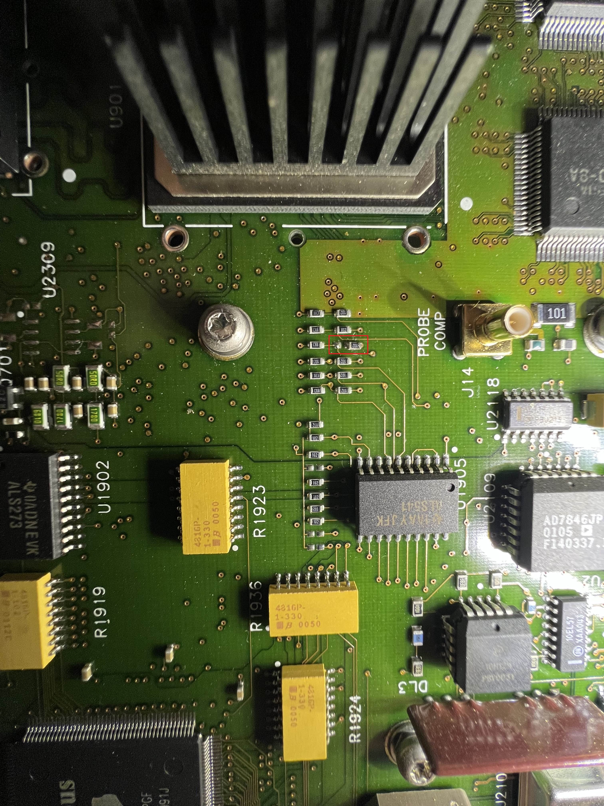

<!DOCTYPE html>
<html>
  <body style="background-color:#FFFFFF;">
  </body>
</html>
<!DOCTYPE html>
<html lang="en">
<head>
    <meta charset="UTF-8">
    <title>Infiniium Oscilloscope Upgrade</title>
    <style>
        main{
            background-color: silver;
            padding: 1rem;
            min-width: 400px;
	max-width: 1000px;
            /* width means fixed */
	margin-left: auto;
	margin-right: auto;
        }
        main p{
            margin: 1rem auto;
            background-color: silver;
            padding: 1rem;
        }
        main p:nth-child(1){
            min-width: 400px;
            
        }
        main p:nth-child(2){
            max-width: 1500px;
            
        }
	main ol{
            margin: 1rem auto;
            background-color: silver;
            padding: 1rem;
        }
	main ol:nth-child(1){
            min-width: 400px;
            
        }
        main ol:nth-child(2){
            max-width: 1500px;
            
        }
	main h3{
            margin: 1rem auto;
            background-color: dimgrey;
		color: Gainsboro;
            padding: 1rem;
        }
	main h3:nth-child(1){
            min-width: 400px;
            
        }
        main h3:nth-child(2){
            max-width: 1500px;
            
        }
	main img{
		display: block;
		margin-left: auto;
		margin-right: auto;
	}
	header{
            background-color: cadetblue;
            padding: 1rem;
            min-width: 400px;
	max-width: 1000px;
            /* width means fixed */
	margin: auto;
	
        }
	header h1{
		margin: auto;
	
		 
            background-color: cadetblue;
		color: black;
            
	}
	header h1:nth-child(1){
            min-width: 400px;
            
        }
        header h1:nth-child(2){
            max-width: 1500px;
	}
	header h4{
		margin: auto;
		
		background-color: cadetblue;
		color: black;
	}
header h4:nth-child(1){
            min-width: 400px;
            
        }
        header h4:nth-child(2){
            max-width: 1500px;
	}
    </style>
</head>
<body>
    <header>
      <h4><a href="https://1832jsh.github.io/">Return to main page</a><br><br></h4>
        <h1>Infiniium Oscilloscope Upgrade</h1>
</header>
 <main>   

<h3>Project Goals</h3>

	<ol>
	<li>Improve boot times</li>
	<li>Switch from Windows 98 to XP</li>
	<li>Increase oscilloscope bandwidth</li>
	<li>Unlock more acquisition memory</li>
	</ol>

<h3>Disassembly</h3>
	<p>Start by removing the incicated screws on the bottom</p>
    <p></p>
    <p>place the scope upright and then remove the srews on the back</p>
    <p></p>
	<p>Next, remove the two screws attaching the handle. It may also be helpful to remove the the acessory bag on top.</p>
    <p></p>
	<p>The cover can be removed by sliding it off the back of the oscilloscope</p>


<h3>Upgrading HDD and memory</h3>
    <p>Once open you will see the motherboards and PCI cards, please note the locations of the labelled components.</p>
    <p></p>
    <p>To access the hard drive board, start by removing the IDE breakout board on the back of the floppy drive. Make sure to remove the screw and disconnect the cable.</p>
    <p></p>
    <p>With the IDE breakout board removed, you can now access the top two screws of the HDD bracket. Once they are removed, lift up the right side of the HDD carrier and slide it to the right until it fully clears the floppy drivs and can be fully removed.</p>
    <p></p>
    <p>Finally replace the HDD, add additional RAM (512MB max), and replace the CMOS battery, follow the steps in reverse to reassemble.</p>
    
<h3>Upgrading bandwidth</h3>

    <p>Flip the scope over so that the bottom is facing up, then remove the bottom panel to expose the analog input board.</p>
    <p></p>
    <p>Focusing on the highlited section from the previous image, remove the indicated resistor to upgrade the bandwidth from 600MHz to 1GHz.</p>
    <p></p>
    <p>You can shift the resistor over as shown.</p>
    <p></p>
    <p>Before closing the bottom panel, check that all screws are tight.</p>


<h3>Finishing up</h3>
    <p>To close everything up, follow the dissassembly steps in reverse. Once complete try booting up the scope, it may be necessary to change some BIOS settings to get things working correctly.</p>
    <p>Wait for the infiniium application to launch, then check that it can see all scope channels, if it cannot, go to device manager and manually install the missing drivers.</p>
    <p>Finally, go to the utilities menu in the Infiniium application and go through the calibration procedure.</p>
<h2>&nbsp;</h2>
<p>&nbsp;</p>
	</main>
</body>
</html>
